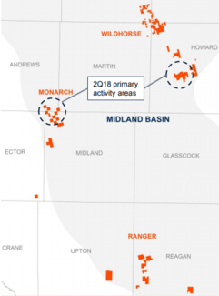
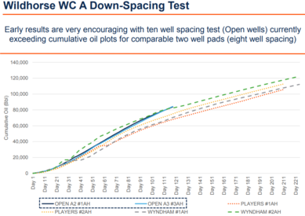
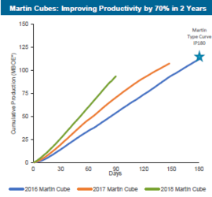
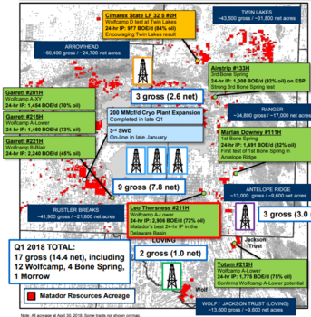
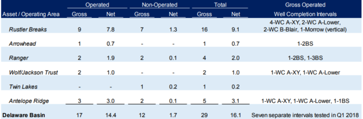
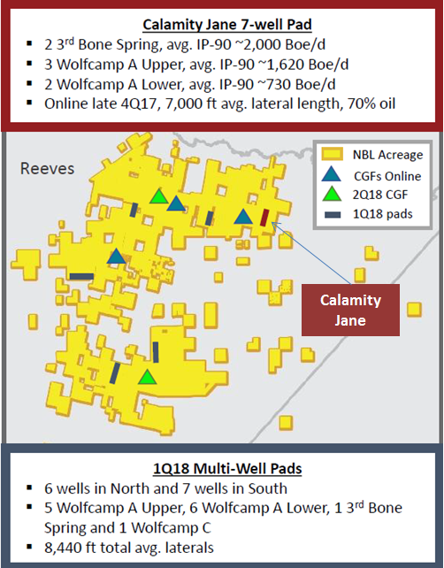
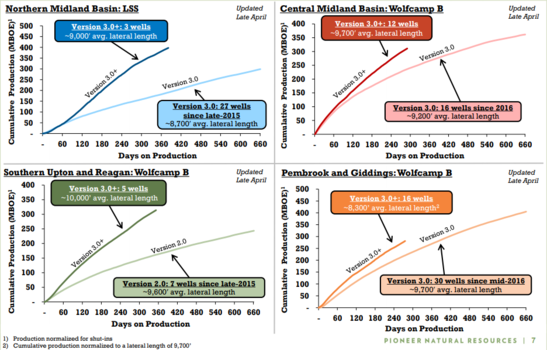

1Q'18 Conference Call Highlights
- Turn mobile devices horizontal for figures to display properly.
Service Companies
Baker Hughes
- See global oil demand rising at a steady pace driven by improved GDP outlook in the United States and Europe.
- Prices should be relatively range bound in 2018.
- Offshore markets remain below historic activity levels.
- Drilled a 20,000’ foot horizontal in the Marcellus Basin in just 8 days.
- Annual Report Highlights: In 2017, the TerrAdapt bit was introduced to the industry as the first adaptive drill bit that adjusts to downhole conditions autonomously to enable smoother, faster drilling and extended tool life.
Halliburton
- Total company revenue was $5.7 billion, representing a 3% decrease from 4Q’17.
- Although revenue was impacted by delays in sand delivery due to weather related rail interruptions, North American revenue was up ~$3.5 billion, or 3.4% from the previous quarter.
- 2018 CAPEX spend is expected to be ~$2 billion.
- Pressure pumping market remains tight; company achieved a new record for stages per frac fleet in March.
- Although incremental horsepower has hit the market, undersupply is expected to persist due to degradation of existing equipment. “About 50% of announced horsepower does not translate into new crews. This means that about half the new build equipment is being used to replace or add to crews already in the field.”
- Market undersupply is ~1-1.5 million horsepower per day. Do not foresee any major increases in supply due to attrition of equipment.
- Halliburton views trucking, labor and rail as three significant areas of supply chain tightness.
- North America’s role in the global supply has shifted from a swing producer to baseload supplier to meet growing global demand.
- Many customers have redeployed capital from international non-OPEC opportunities to North America (CVX, XOM, APC, APA etc.).
- Company is close to achieving normalized margins, defined as ~20%, which hasn’t happened since 2014.
- Technology Update:
- CoreVault - First and only wireline rotary sidewall coring system that captures and preserves both reservoir rock and fluid samples. Operator in the Permian confirmed a six-fold increase in recorded pressure as compared to previous tools deployed in the field.
- International market pricing continues to shift down, but see inflection point in 2019 from increases in bidding activity.
- Other events: Halliburton wrote down all of its remaining assets ($312 million) in Venezuela due to ongoing political and economic challenges.
- Annual Report Highlights: See substantial growth in the North American market with increased commodity prices, a surge in unconventional activity and a continuation of the Completions and Production pricing recovery that began in 2017. Company expects production segement to grow largely through the recent acquistion of Summit ESP in 2017, which made Halliburton the second largest ESP provider in North America.
Superior Energy Services
- In the U.S. Onshore market, revenue totaled $331.4 million which was essentially flat compared to the fourth quarter.
- Frac utilization was challenged by weather and shortages of frac sand.
- Increasing trend of customers self-sourcing sand; around 70% of frac jobs will have customer-supplied proppant.
- Similar to Halliburton, company reiterated lack of investment in pressure pumping over the past few years will keep supply/demand balance fairly tight.
- Forecast pricing and utilization in 2019 to be on trend with 2018.
- Adding 150,000 horsepower, or three fleets in the second quarter.
- Fleets are averaging ~$15 million in EBITDA per quarter. At current margins, will not invest in new builds.
- Need more clarity of what 2020,2021 and 2022 look like before thinking about expansion.
- Completely sold out of 41/2 drill pipe and seeing increased demand in 5 1/2 drill pipe used in longer laterals.
US Silica
- Oil and Gas revenue totaled $312.9 million, up 2% from the fourth quarter.
- 67% of sand was sold in basin compared to 62% sold in basin last quarter.
- 2018 CAPEX is expected to be between $300-$350 million.
- Guiding second quarter sand volumes to increase by 10%-15% and spot pricing to increase at mid-single digit rates.
- First rail line at the Crane County facility started up during the quarter. The current run rate is ~500 tons per year or about 50% of permitted capacity.
- Production rate should ramp up to 1 million tons per year in the second quarter.
- Lamesa facility is behind originally planned start-up timeline.
- On track to produce wet tons in June, with drying commencing in the third quarter, and ramping to full capacity of 2.6 million tons per year by the end of 2018.
- Company believes Permian Basin local sand production will come online much slower than many predict, and further, that demand will grow much faster than our industry can bring on capacity.
- Market should remain tight through 2019.
- We’re completely sold out of sand. We’re literally selling everything we can make.
- Noted supply could be hampered by flooding on the Mississippi, where barges have been unable to haul freight downstream.
- Read through: The is the first time I’ve seen supply constraint issues mentioned due to delays in barge shipments; Yet another hiccup that exacerbates an already tight supply/demand market.
- Continue to see strong demand for Northern White and regional local sand.
- Permian receives ~45%-50% of sand.
- Large customer in the Permian is switching back to Northern White due to the quality of the regional sand.
Upstream Companies
Anadarko Petroleum
- Delaware Basin production averaged 85 Mboe/d (61% oil), up 10% from the previous quarter.
- Running 7 rigs and 5 frac crews for the remainder of 2018.
- Secured future oil takeaway capacity ahead of planned development totaling ~200 Mbo/d.
- Commitments will cover half of 2018 projected oil production and 100% of 2019 and 2020 oil production.
- Subsequent to quarter end, the company sold its first Delaware Basin international crude oil cargo.
- In North Loving area, 12 XL laterals were drilled targeting four different targets within the Wolfcamp A and a single 3rd Bone Spring.
- First regional oil treated facility (ROTF) will be operational during the second quarter.
- Additional ROTF will be added in North Loving County and the first cryogenic facility at the Mentone gas plant in the third quarter.
- Haven’t had any issues using sand sourced from in basin.
- Expect to complete previously announced $3 billion share repurchase program by the end of the second quarter.
Apache Corporation
- Permian production averaged 183 Mbo/d, up 3% sequentially.
- Alpine High production averaged 26 Mboe/d, up 33% from the fourth quarter.
- In the Midland Basin, completed first Wolfcamp C in Upton County (Azalea area).
- Schrock 2326 Wolfcamp C had an IP30 of ~1,428 Boe/d (70% oil).
- Well was completed in tandem with a Wolfcamp A and Wolfcamp B.
- Early results could lead to several hundred Wolfcamp C locations.
- Company implemented a new completion design with more optimal stage and cluster spacing, which has contributed to improved early-time well performance.
- Alpine High well costs have dropped by 20% from the 2017 average.
- 4 well Chinook pad is the company’s first multiwell test in the wet gas window had an average IP30 of 1,366 Boe/d.
- Contains 1,350 BTUs wet gas and oil.
- In Northcentral Reeves County 9 wells were PoP’d in the Dixieland area.
| Lease | Formation | Lateral | IP30 Avg. | % Oil |
|---|---|---|---|---|
| Burnside Pad (2 Wells) | Upper & Middle Wolfcamp | 4,438 | 2,130 Boe/d | 42% |
| Bull Run Pad (7 Wells) | Upper & Middle Wolfcamp | 4,360 | 1,684 Boe/d | 45% |
Callon Petroleum

- First quarter production averaged 26.6 Mboe/d, which is flat versus the previous quarter.
- Production expected to ramp fairly evenly with estimated growth of ~10% per quarter through remainder of year.
- Ward County 2 well pad (Rendezvous A1 #01LA and A2 #09UA) targeting Lower and Upper Wolfcamp A averaged ~1,700 Boe/d in the first 20 days.
- Shifting activity to Monarch (NE Midland) and Wildhorse (Howard)
- Company first 6 well pad in Monarch has commenced drilling with 5 of 6 wells drilled.
- Wolfcamp A down-spacing test (10 wells/section) in Wildhorse exceeding previously drilled 8 spacing test.

- Initial results from in basin sand showing positive results.
- ~40 Mbo/d gathering commitments (multi-year term agreements) from Plains, Enterprise and Reliance.
- ~60% of 2018 oil production is protected by Mid-Cush basis hedges.
Chevron
- Permian unconventional production averaged 252 Mboe/d, up 23% from the fourth quarter.
- Currently running 17 rigs.
- Around 2/3rds of capital costs are protected in the Permian.
- Estimate 2022 Permian unconventional production will increase to ~650 Mboe/d.
- Macro forecast for oil and LNGs look bullish for companies with supply ramps in the coming years.
- Demand growth and production declines will lead to supply gap by 2020 and by 2040, a gap of ~42 MMbo/d.
- LNG Supply and demand curve shows mid-term market oversupply and a gap developing next decade.
Devon Energy
- Delaware Basin production averaged 73 Mboe/d, up 22% sequentially.
- Frac efficiencies reached up to 15 stages/day.
- Boomslang development reached first production from 11 wells targeting 3 intervals (Leonard and Bone Spring).
- Average IP30 was ~1,400 Boe/d from 7 of 11 wells
- Cycle time on project was ~6 months and 40 days ahead of plan.
- Two Second Bone Spring Boundary Raider wells achieved highest flow rates in Delaware Basin history.
- Boundary Raider 212H had an IP24 of 12,868 Boe/d (82% oil).
- Boundary Raider 213H had an IP24 of 11,149 Boe/d (76% oil).
- Devon plans to drill 25 more wells in this area over the next 18 months.
- Announced new play targeting the 2nd Bone Siltstone in its Thistle/Gaucho area.
- 2 wells were PoP’d and achieved an IP24 average of ~1,700 Boe/d.
- Commenced completion operations at its Seawolf project in the Rattlesnake area located in Southern Lea County.
- 12 wells are targeting multiple horizons within the Wolfcamp A.
- Drilling efficiencies improved 67% versus prior activity with an average savings of $800k per well.
- Peak production expected in 4Q’18.
- Midland basis swaps protect ~50% of oil production.
- ~40% of oil is delivered on firm transport to the Gulf Coast.
- G&A expected to be 15% lower in second quarter due to workforce and non-personnel related costs reductions.
- Announced in April plans to lay off 9% of its workforce or 300 employees.
- G&A savings per year will be $150-$200 million per year.
- Repurchased $204 million worth of shares from $1 billion program and raised the quarterly dividend by 33%.
Encana
- Permian growth rate in 2018 expected to be ~30% (3Q-4Q weighted) focused primarily on acreage in Midland and Martin Counties with associated CAPEX of $750-$800 million.
- D&C average cost per well is ~$5.6 million for a 7,500’ lateral.
- Plan on drilling 100-115 net wells running 4.5 rigs. 
- Five year plan targeting $3 billion in cumulative free cash flow with a ~25% CAGR.
- Expect to grow within cash flow in 2018.
- ~50% of company’s capital directed towards the Permian in 2018.
- Martin County 10-well cube averaged 1,000 Bo/d over 90 days.
- More than 60% of wells will be on pads with more than 8 wells.
- Productivity has improved by 70% in 2 years.
- In Midland County, 8-well cube had an average IP30 of 1,150 Bo/d.
- Testing Jo Mill in Martin and the Middle Spraberry and Wolfcamp C in Midland.
- During the first quarter, horizontal LOE averaged $2.50 per boe.
- Offsetting service cost inflation with sourcing and efficiency improvements.
- Self-sourcing sand, water and OCTG (casing tubing etc.).
- Utilized 40% local sand during the first quarter and transitioning to 100% by EOY.
- Midland differential exposure in 2018 and 2019 limited.
- Fully protected in 2018 and >90% in 2019.
- Expect differentials to widen to as much as $15/Bbl and will not dissipate until the end of 2019
- “Differentials will continue to widen and the basin will most likely need a combination of trucking and rail to get all the barrels to the market”
- “Differentials will continue to widen and the basin will most likely need a combination of trucking and rail to get all the barrels to the market”
- Contrary to QEP’s recent change in flowback strategy which shifted away from ESPs, Encana wants to remove frac fluid as quickly as possible utilizing ESPs, then transitioning to gas lift and finally rod pump.
- Repurchased 10 million shares for $111 million of the previously announced $400 million stock repurchase program.
ExxonMobil
- Unconventional production up 18% YoY.
- Currently running 27 rigs in the Permian.
- Did not disclose any new information regarding recently drilled extended laterals (~15,000’).
- “We’re being very careful what information we disclose on this because we do think there is a competitive advantage here.”
- Oil Demand expected to be very similar to 2017.
- Company is not facing any pipeline constraints and clearing all Permian barrels out of the basin.
- Exxon apparently heard investor’s complaints about CEO, Darren Woods, not attending the conference calls. Going forward, members of its managment team, including their CEO, will be participating.
Laredo Petroleum
- Production averaged 63 Mboe/d, up ~9% from the previous quarter.
- Increased guidance by 12% for full-year 2018.
- Currently running 3 rigs and is in the process of adding a 4th.
- Results from 32 wells per section density test have been very encouraging.
- “Aggressively moving forward with 32 well development in the Upper and Middle Wolfcamp.”
- Sugg-A 157/158 5 well package, completed in the second and third quarters of 2017, is performing above type curve after approximately nine months.
- Company expects 20-25 of it remaining completions in 2018 to be developed on 32 Upper/Middle Wolfcamp wells per section.
- Revised completion design leading to increased efficiencies in cycle time.
- Lengthening stages, reducing fluid concentrations and utilizing PerfExtra from Gas Technology Institute.
- Initial performance from wells with reduced fluid concentrations has been below expectations.
- Company will continue to use longer stage lengths and PerfExtra as they have been positive for capital efficiency.
- First three XL laterals (15,000’) completed in the third quarter of 2017 have continued to improve and are now in line with the type curve, adjusted for lateral length.
- Announced update on previously reported marketing suit between Laredo and Shell.
- Shell has terminated the contract and informed Laredo that it will no longer purchase oil from the company.
- Estimate impact to Laredo’s price realization is the reduction of 2018 forecasted oil price realizations from 95% of WTI to 91% of WTI.
- 70% of 2018 volumes are protected from Midland pricing via Midland-Houston and Midland-Cushing basis swaps.
- Repurchased 6,727,901 shares of common stock in the first quarter at a weighted-average price of $8.69/share for a total of $58.5 million.
- Repurchase program allows up to $200 million in stock purchases.
- Repurchase program allows up to $200 million in stock purchases.
Matador Resources

- Delaware Basin production averaged ~37.2 Mboe/d (63% oil), up 7% sequentially.
- Guiding 2Q production to average ~47 Mboe/d running 6 rigs.
- Acquired 3,500 net acres YTD for ~$30 million.
- Company now holds ~115,000 net acres in the basin.
- PoP’d 29 gross (16.1 net) wells during the quarter.
- Leo Thorsness #211H was completed in the Lower Wolfcamp A had an IP24 rate of 2,906 Boe/d.
- Company’s best 24 hour rate in the Delaware Basin.
- Garret 3 well pad (State Line Area) tested the Wolfcamp A-XY, Lower Wolfcamp A and Wolfcamp B-Blair.
- Wolfcamp B Blair had an IP24 rate of 2,240 Boe/d (45% oil).
- On the company’s Jackson Trust acreage in Northeast Loving, completed a Lower Wolfcamp A.
- Totum #212H had an IP24 rate of 1,755 Boe/d (75% oil).
- Test “confirms Lower Wolfcamp A potential.”
- Leo Thorsness #211H was completed in the Lower Wolfcamp A had an IP24 rate of 2,906 Boe/d.

- Midland-Cushing Basis differential hedging update: ~3.5 million barrels hedged for remainder of 2018 at a weighted average price of $1.02/Bbl.
Noble Energy
- First quarter volumes averaged 45 Mboe/d, up 18% from the fourth quarter.
- PoP’d 13 wells with an average lateral length of 8,430’.
- Operated 6 rigs and 3 frac crews.
- Completed 3rd central gathering facility and expect to add 2 additional CGFs by YE’18.
- All CGFs are connected and flowing through Advantage pipeline.
Securing firm transport for oil takeaway on EPIC crude pipeline expected to be completed in 2H’19. 
- Transition to multi-pad projects has reduced completion time by 26%.
- Wolfcamp A results across their position ranged from 1,000-2,400 Boe/d from 9 wells PoP’d during the quarter.
- Calamity Jane pad exhibiting shallower decline than company initially anticipated. When pressed about projecting results across their acreage, management stated, “wells were drilled in top tier rock, so you should expect outperformance based on statistics of the entire acreage position.”
- Completed a single Third Bone Spring on its Trigger Pad located in the Northwest area of their acreage and a Wolfcamp C on the West side.
- Wolfcamp C is performing in line with expectations.
- Targeting more than 30% use of recycled water by year end.
Repurchased ~$67.5 million worth of stock and increased the dividend 10% during the quarter.
Pioneer Natural Resources
- Midland horizontal production averaged ~220 Mboe/d (66% oil), up ~5% from the previous quarter.
- Oil production averaged 145 Mbo/d, up ~3% sequentially.
- Placed 63 wells on line during teh quarter.
- Currently running 20 rigs and expect to PoP 250-275 wells during 2018.
- 2018 Permian production growth trending to high end of guidance range at 19%-24%.
- Version 3.0+ completions continue to significanly outperform Version 3.0.
- Utilizing between 2,500-5,000 lbs/ft depending on area.

- Adding 3 additional Wolfcamp D tests with 3.0 fracs in 2018.
- First Wolfcamp D well has produced 260 Mboe (72% oil) over 130 days.
- Currently delivering ~160 Mbo/d of Permian Basin net oil production to the Gulf Coast under firm transportation contracts; represents ~95% of Pioneer’s current Permian production.
- Brent pricing added $16 million of incremental cash flow in the first quarter.
- Exported 87 Mbo/d during the quarter. Exports should grow in 2H of year as company increases capacity from ~110 Mbo/d to ~150 Mbo/d.
- Targeting more than 90% of long-term production under firm pipeline transportation to the Gulf Coast.
- Targeting more than 90% of long-term production under firm pipeline transportation to the Gulf Coast.
QEP Resources

- Permian Basin production averaged 30.9 Mboe/d, up ~10% sequentially.
- Guiding 2018 production to average between 38.1-40.5 Mboe/d, an increase of ~75% from the 2017 average.
- Increased guidance slightly from February announcement due to efficiency gains in drill times and a step-change in number of frac stages completed each month.
- Expect to PoP 104 wells with associated D&C Capex of $725-$775 million, or ~$7.2 million per well which is in line with current AFE expectations.
- Plan on running 41/2 rigs and 2 frac crews throughout the year.
- Placed 31 net wells online compared to the original plan of 18 net wells.
- Wells were completed on two separate projects, the Peeler Pad (9 wells) had an average lateral length of 8,277’ and the Act Pad (22 wells targeting 5 horizons) which was designed to test 44 wells per section had an average lateral length of 9,351’.
- Company stated a few Dean wells were completed in what was originally thought to be a frac barrier.
- Recent observations from tests revealed that the Spraberry Shale and Upper Wolfcamp both appear to be influenced by the Dean.
- The two projects each cover a half section, which can be seen from the map below.
- The Charts illustrate lateral diagrams for both projects.
- Note: Charts shows laterals obtained from IHS surveys.
- Note: Mobile devices will not show 3D images.
QEP Act and Peeler Projects
- QEP appears to be testing communication between the Dean and Wolfcmap A on the Peeler pad.
- Shifting to gas lift from ESPs.
- Gas lifts are expected to save ~$300k per well.
- Highlighted water infrastructure at Mustang Springs which includes 20 water wells and 3 frac ponds (2 supply/1 recycled) and other pipe infrastructure covering 6 miles.
- Recycled ~40,000 Bbls/d in the first quarter and expect to recycle ~100,000 Bbls/d by the end of the third quarter.
- Around one-third of wells are being frac’d with local proppant and plan on using 100% locally sourced sand as soon as possible.
- Repurchased and retired 5,621,540 shares at a weighted average price of $9.37, for $52.8 million.
- After reporting, the stock is currently trading at $11.75, down ~5% from yesterday’s close.
- After reporting, the stock is currently trading at $11.75, down ~5% from yesterday’s close.